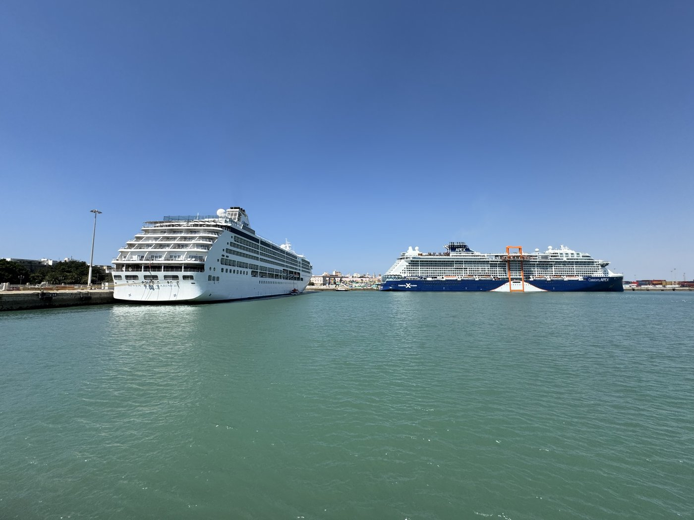
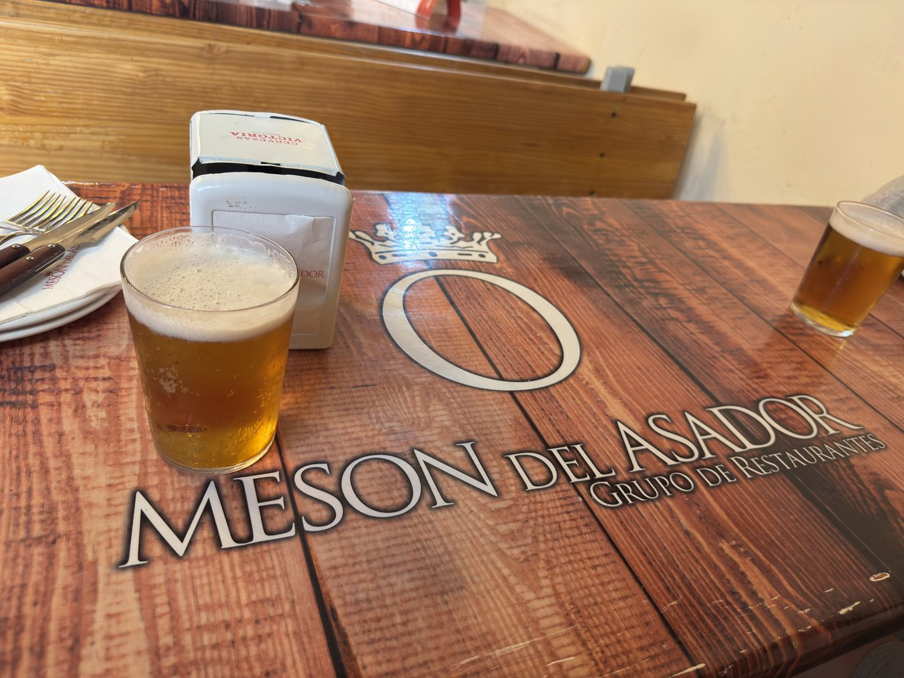
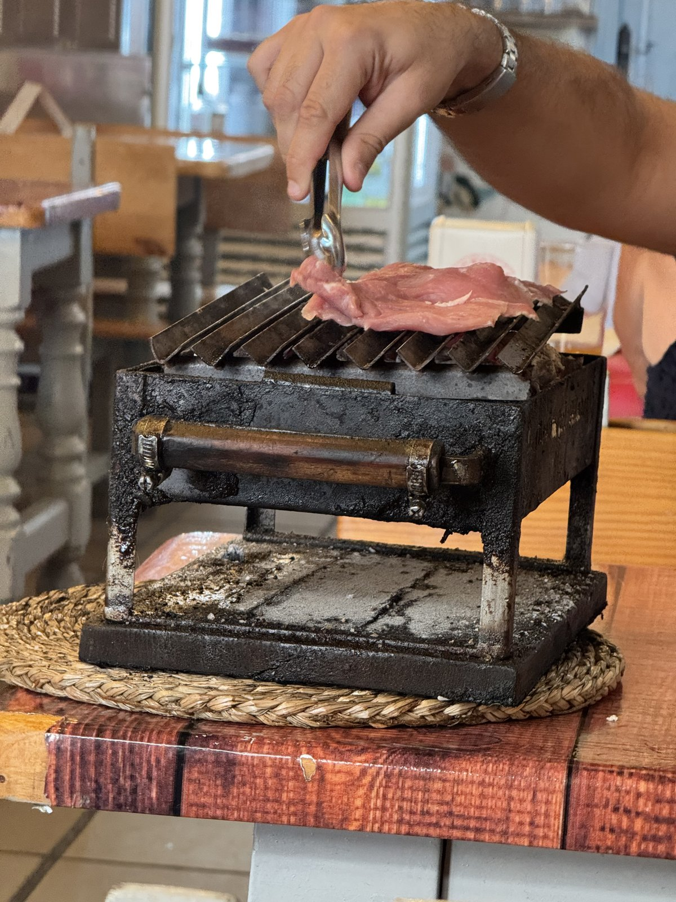
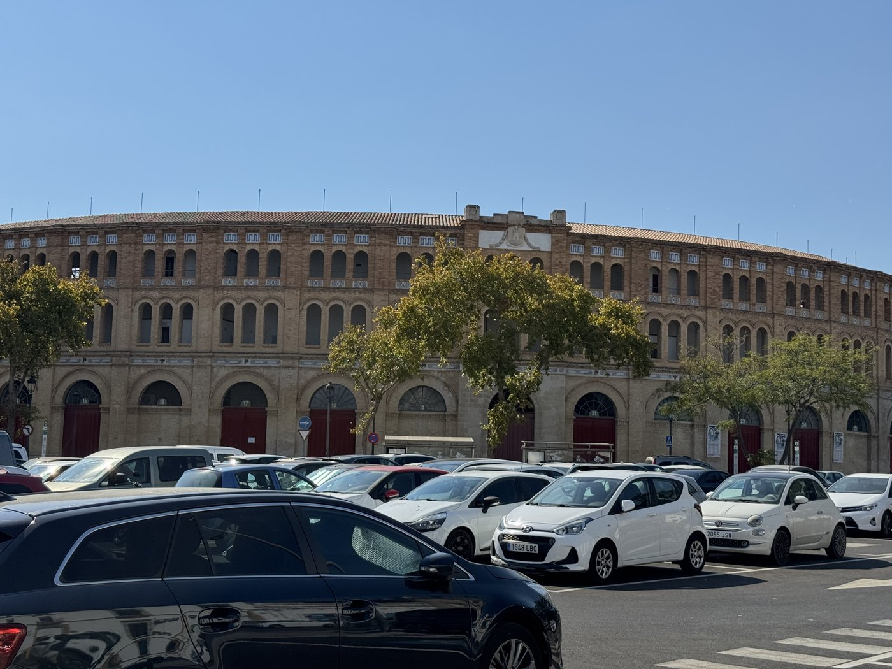
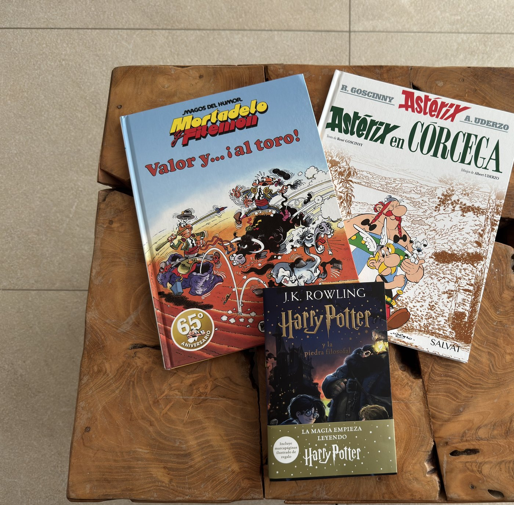
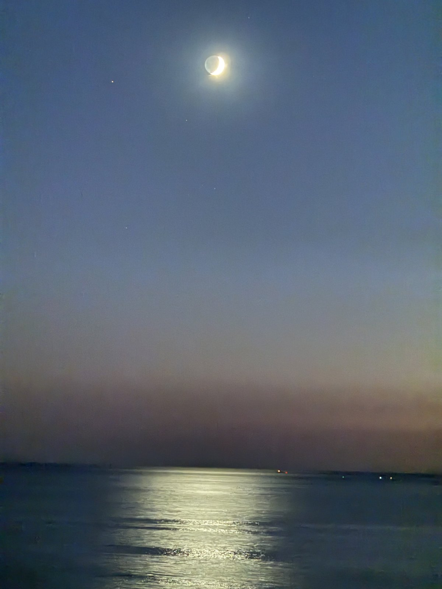

Auch der schönste Urlaub nähert sich irgendwann seinem Ende: Heute morgen konnte ich schon für den Rückflug einchecken, auch wenn wir erst übermorgen fliegen. Also haben wir es nochmal ein bisschen krachen lassen.
Der Plan war einfach. Erst die Nahverkehrskarte an „unserem" Estanco aufladen, damit genug Guthaben für eine Fährfahrt darauf ist, dann mit der Fähre nach El Puerto de Santa María übersetzen.
Ein Estanco ist so ein Lädchen, das es hier überall gibt; man erkennt es am braun-gelben Tabacos-Schild — weshalb Sassi sie konsequent „Tabasco-Läden" nennt. Neben Tabakwaren verkaufen sie Briefmarken, auf Spanisch sellos, was wörtlich „Siegel" bedeutet, und sie laden Nahverkehrskarten auf. Ein Kiosk, ein Postschalter und ein Fahrkartenautomat in einem.
Ein kleiner Fehler und ein großer
Dummerweise hatte ich die Fährabfahrten nicht vorher geprüft, was sich als fatal erweisen sollte. Wir sind erst kurz vor zwölf los, haben beim Estanco die Karte aufgeladen — und dabei den Bus der Linie 1 zum Hafen verpaßt.
An sich nicht tragisch, die fahren alle zehn Minuten und sind unter der Woche erstaunlich gut ausgelastet. Aber so kamen wir erst um 12:23 am Hafen an. Die Fähre fährt um 12:25 — nur werden ab fünf Minuten vor Abfahrt keine Tickets mehr verkauft, und drei Minuten vorher wird die Stelling geschlossen. Keine Chance. Die nächste fuhr erst um 14:05.
So etwas ärgert mich maßlos: wenn durch einen kleinen Fehler ein viel größerer entsteht. Bus verpaßt, Fähre verpaßt, anderthalb Stunden Lücke. Die arme Sassi mußte in den folgenden Minuten erstmal einen herummupfelnden Gnusselkopp ertragen.
Zähneknirschend stimmte ich Plan B zu: ab in die Altstadt, die ist ja gleich um die Ecke. Durch die Calle San Francisco bis zur Plaza San Francisco — wieder kein Frotteestrandtuch von Cádiz gefunden, dafür ein paar kühle Drinks im Schatten. Als wir die Rechnung bestellten, kam sie mit zwei Euro Guthaben. Leider stellte sich heraus, daß das mitnichten die Geschäftsidee des Lokals war — „Sie trinken, wir zahlen!" — sondern schlicht die falsche Rechnung.
„¡Dicho, hecho!"
Plan A war gewesen: in El Puerto aussteigen, wo wir beim letzten Mal die Fähre gar nicht verlassen hatten, dann ein Gang durch die Stadt. Erst zur Bodega Osborne, die dort ihren Sitz hat — wer sie nicht kennt: Osborne mit dem schwarzen Stier-Schattenriß ist neben Sandeman mit dem zorroähnlichen Schattenriß eine der weltweit bekanntesten Sherrymarken. Dann zur Stierkampfarena, um sie wenigstens von außen gesehen zu haben; Stierkämpfe brauchen wir beide nicht. Und zum Schluß in ein Grillrestaurant, das Mesón del Asador, das mir empfohlen worden war.
Nur hat das mittags von zwölf bis sechzehn Uhr geöffnet und dann erst wieder um acht. Mit der 14:05-Fähre würde das eng — es sei denn, man stellt den Plan auf den Kopf. ¡Dicho, hecho!, wie der Spanier sagt: gesagt, getan.
Also zurück zur Fähre, zumal die Altstadt schon wieder brechend voll war mit zwei Kreuzfahrern im Hafen.

Auf dem Rückweg bogen wir etwas früher ab, was uns den imposanten Vergleich beschert hat: der Riesenpott Kreuzfahrtschiff gegen die Häuschen im Altstadtgäßchen. Am Hafen vorbei passierten wir noch eine Baumgruppe, die uns schon bei den Fahrten mit dem roten Bus aufgefallen war, weil dort sehr laute Vögel zu hören sind: grüne Mönchssittiche. Sie halten sich allerdings so gut versteckt, daß sie kaum zu sehen und noch weniger zu fotografieren sind.
Der Tischgrill am Nachbartisch
Die 14:05er haben wir dann bekommen, sie fuhr pünktlich, und eine halbe Stunde später waren wir auf der anderen Seite der Bucht. Wir machten uns stante pede auf zum Restaurant — nur um von einem völlig leeren Außenbereich und verschlossenen Türen empfangen zu werden.
Glücklicherweise war Sassi Manns genug, die Tür einfach mal zu probieren: offen. Drinnen saßen auch einige Gäste. Wahrscheinlich war es draußen nur zu sonnig — oder sie wollten die „spanischen Fliegen" nicht anlocken, wie wir sie liebevoll nennen. Hier gibt es diese ganz fiesen kleinen Stubenfliegen, die sich auf alles stürzen, was Feuchtigkeit oder Schatten verspricht. Erreichbare Körperöffnungen jeglicher Couleur haben da groß Konjunktur.

Das Essen war fantastisch und die Bedienungen supernett. Wir haben uns auf „Spenglisch" einen zurechtgebrochen, aber es hat bestens funktioniert: Sassi bekam Schweinemedaillons mit Pfeffersauce, ich nochmal eine Brocheta mit Schweinefilet, beide Gerichte diesmal mit Kartoffeln. Ein Freibier gab es obendrauf, weil sich einer der Kellner so gefreut hat, daß ich versucht habe, Spanisch mit ihm zu sprechen. Die reine Bestellung bekomme ich einigermaßen hin — schwierig wird es erst, wenn die Situation vom Standardskript abweicht.
Die Portionen sind riesig. Und was wir am Nachbartisch gesehen haben, haben wir uns leider nicht zu bestellen getraut, weil ich nicht ganz verstanden habe, wie es funktioniert: Man kann für mehrere Personen einen kleinen Tischgrill bekommen, mit Holzkohle, an dem man sich sein Fleisch genau so grillt, wie man es mag.

Doch noch zum Stier
Gut gemästet verließen wir das Lokal um fast halb fünf, deutlich nach der eigentlichen Schließung — aber wenigstens waren wir nicht die letzten. Das bedeutete allerdings, daß ich Bodega und Stierkampfarena streichen müßte, weil die Fähre um siebzehn Uhr zurückfahren sollte und die nächste erst anderthalb Stunden später. Dachte ich.
Auf dem Weg zum Hafen mußte ich niesen. Urplötzlich, und es wurde mein berüchtigter Brüllnieser. Sassi hat sich voll erschreckt, und wir konnten das Echo von der anderen Seite des Hafenbeckens hören. Sassi behauptet, man habe ihn über die Bucht noch an unserem Hotel hören müssen.
Am Fähranleger stellte sich dann heraus, daß ich mir auch diese Abfahrtzeit falsch gemerkt hatte: Die Fähre fuhr erst um 17:30. Eine halbe Stunde mehr, als gedacht. Da der Weg zur Stierkampfarena ohnehin an der Bodega vorbeiführt und laut Google Mops — äh, Maps — nur elf Minuten zu Fuß dauert, machten wir uns trotz vollem Bauch und schwerer Beine nochmal auf.

El Puerto de Santa María ist überhaupt ein sehr schöner Ort mit einer schönen Altstadt — sehr empfehlenswert.
Der Buchladen
Auf dem Rückweg zum Hotel besuchten wir noch einen Buchladen, um den ich seit dem ersten Tag herumgeschlichen bin wie die Katz' um den heißen Brei. Mein Spanisch ist erst auf Niveau A1, und das auch erst ungefähr in der Mitte — also eignen sich eigentlich höchstens Bücher für Grundschüler, aber ob ich damit glücklich würde, weiß ich auch nicht.
Heute sind wir dann doch hineingegangen. Auch, weil ich seit meiner Jugend die durchgeknallten Comics des spanischen Zeichners Francisco Ibáñez Talavera liebe — bei uns als „Clever und Smart" bekannt, im Original Mortadelo y Filemón. Wenigstens einen davon wollte ich mitnehmen. An „Asterix auf Korsika" und dem ersten Band „Harry Potter" auf Spanisch konnte ich dann auch nicht vorbeigehen. Sprachlich weit außerhalb meiner Komfortzone — aber dafür lernt man ja.

Den Abend haben wir wieder gemütlich auf dem Balkon verbracht, heute schon zum zweiten Mal mit Kreuzfahrtschiff: Vorgestern hatten wir nach Sonnenuntergang die Mein Schiff 6 auf Kurs Málaga erwischt, heute die Seven Seas Mariner mit demselben Ziel, direkt vor der untergehenden Sonne. Dazu gaben sich die dünne Sichel des zunehmenden Mondes und die Venus ein Stelldichein.
